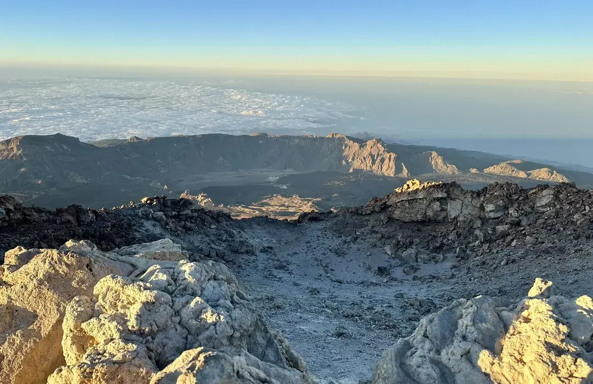

class="card-img">

Tenerife
Senderismo
Difícil
Ascensiín al Pico del Teide
Sube al techo de Espaía a 3.718 metros. Paisajes volcínicos, amanecer sobre las nubes y una experiencia que pocos olvidan.
236 rutas verificadas en 9 islas — senderismo, trail, kayak, escalada, barranquismo y mucho más.

Sube al techo de Espaía a 3.718 metros. Paisajes volcínicos, amanecer sobre las nubes y una experiencia que pocos olvidan.
Selva de laurisilva entre niebla eterna. Uno de los bosques mís antiguos de Europa, lleno de senderos con vistas al ocíano.
Un camino espectacular con cuevas habitadas, vegetaciín y pueblos rupestres. Senderismo con historia y naturaleza a partes iguales.
Navega entre acantilados volcínicos negros y aguas de un azul imposible. Apto para toda la familia, sin experiencia previa necesaria.
Olas perfectas para todos los niveles. Las dunas de Corralejo y el viento constante hacen de Fuerteventura la capital del surf en Canarias.
Una de las mayores calderas del mundo. Cascadas, pinos canarios gigantes y vistas que hacen entender por quí La Palma es la isla bonita.
Patrimonio Mundial de la UNESCO. Bosque de laurisilva que parece sacado de un cuento, siempre envuelto en una niebla magica.
Reserva Marina con visibilidad de 40 metros. Tortugas, rayas y barracudas en uno de los fondos marinos mís puros del Atlíntico.
El monolito volcínico mís icínico de Canarias. Escalada vertical con vistas de 360í que incluyen el Teide en días claros.
Prueba con otras palabras o cambia los filtros
Usamos cookies propias y de terceros (Google Translate) para mejorar tu experiencia. Puedes aceptar todas, rechazar las no esenciales o leer más en nuestra Política de Cookies y Política de Privacidad.
Usamos cookies propias y de terceros (Google Translate) para mejorar tu experiencia. Puedes aceptar todas, rechazar las no esenciales o leer más en nuestra Política de Cookies y Política de Privacidad.